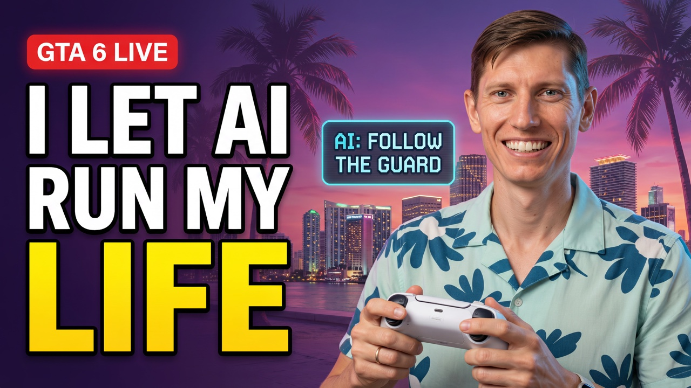

Version 2. I checked every line of the first script against what exists. I built the missing parts, then cut or reworded every promise the stream can't keep. Each beat is marked Tested, Built, not tested live or Your call live.

The real OBS scene "PS5 Remote Window" with the two new text sources. Black because the PS5 isn't connected.
Start at 12:00 PM ET, which is when YouTube is scheduled. Plan to stream until about 4 PM.
How the stream is built: PS5 to PS Remote Play on M5. OBS captures the Remote Play window and your camera. OBS sends the stream to Twitch, and the obs-multi-rtmp plugin sends it to YouTube and X. ai-call.py takes a screenshot of the game about every 20 s, asks Claude (Fable 5.2) for one move and writes it to the OBS text "AI Call". chat-vote.py reads Twitch chat and writes VETO/KEEP to "Chat Votes".

You hold the controller the whole time; the AI never presses a button. YouTube and X chat can't be counted automatically, so read them out loud.
| First script said | Real? | Version 2 |
|---|---|---|
| AI makes every call, on screen | Tested ai-call.py: window capture, Fable 5.2, OBS text | Kept |
| Chat can overrule: VETO | Tested Twitch only; one vote per person, reset per AI call | Kept; YouTube and X aloud |
| Score overlay, AI vs chat | No can't update it while holding the pad | Cut |
| "Loser picks my next stream" | No not your decision | Cut |
| Cell and crossword "planet of love" | No already played; save is in the corridor | Cut |
| Guard: "Alright, come on" | Tested AI right every time | Opener, if the game resumes there |
| AI quiet in cutscenes | Tested shows "watching…" | Kept |
| "The AI told me to rob a store" | No the story does | "The story makes me rob it. The AI just calls how." |
| Ask the AI which button | No 3 to 5 s vs a ~1 s prompt | "The AI is too slow for this, that's why I hold the pad." |
| "The AI got me arrested" | No the arrest is scripted | "Scripted arrest. Even the AI can't talk me out of it." |
| "Next stream the AI holds the controller" | No not built | Chat poll: YES or NO |
| 5 clips cut the same day | Checked Twitch keeps broadcasts 7 days, clips on | Clip in Twitch, no ffmpeg needed |
| Thumbnail "AI: ROB THE STORE?" | No the AI never says it | New real-face thumbnail G2 ("I LET AI RUN MY LIFE"); kie-B retired |
| # | On screen | You say or do | Status |
|---|---|---|---|
| 1 | Starting Soon, then game | "Everyone's playing GTA 6. I'm letting an AI run my life in it. It watches my screen and calls every move, up there. I hold the controller. Twitch chat: type VETO and I do the opposite." | Your call live |
| 2 | First AI line | Read it, do it. "Every 20 seconds, one decision." | Built, not tested live |
| 3 | Corridor, guard | AI: "Follow the guard." "Easy one, robot." | Tested |
| 4 | Cutscene | AI: "watching…" "It knows when to shut up. Unlike you, chat." | Tested |
| 5 | Counselor cutscene | 30 s on how it works: "Screenshot in, three to five seconds, one move out." | Measured |
| 6 | Robbery flashback | "Lucia robs a store. Not the AI's idea, but it'll tell me how." Clip | Your call live |
| 7 | Button prompt | Press it yourself. "The AI takes four seconds. That prompt gave me one." Clip | Measured |
| 8 | Police chase | Let late lines show. "It's narrating the past." Clip | Built |
| 9 | Arrest | "Scripted. Even the AI can't talk me out of it." Clip | Fact |
| 10 | After the Prologue | Real choices: where to go, whom to talk to. If VETO wins: "Chat overruled the machine." Clip | Built; needs viewers |
| 11 | End | "Should the AI get the controller one day? YES or NO." Thank, raid or end. | Your call live |
When the AI fails it shows "no signal, I'm on my own": say "the AI rage-quit" and keep playing. Do not start a new game; it could overwrite yesterday's save.
| Title | Honest when |
|---|---|
| The AI is too slow for GTA 6 | Always: measured |
| My AI narrates GTA 6 five seconds late | If late lines show on screen |
| Even the AI couldn't stop this arrest | Always: scripted |
| My chat overruled the AI in GTA 6 | Only if a VETO really wins |
| The AI's worst call in GTA 6 | Only for a real wrong call |
| Step | Who | Status |
|---|---|---|
| Twitch title "I Let AI Run My Life in GTA 6 (Chat Can Overrule It) 🔴" | Me | Done, checked after reload |
| OBS "AI Call" and "Chat Votes" text, top of screen | Me | Done |
| On M5: PS Remote Play, connect, full screen | You | |
| Point OBS capture at the new window: fix-capture.py | Me | Tested |
| Start AI: python3 ai-call.py --every 20 --max 25 | Me or you | Tested on frames |
| Start votes: python3 chat-vote.py aabyzov | Me or you | Tested on live chat |
| 5-minute dry run, not live | You and me | Not done |
| YouTube title, description, G2 thumbnail (12:00 PM). On M5: X key, caffeinate | Me (YouTube); you (X, caffeinate) | YouTube done |
| Posts | You approve | Drafts v2 ready |
Commands run from ~/.specwithcode/m4/scratch/2026-11-20-gta6-viral/. touch pause.flag pauses the AI. Nobody can promise viral; this bets on record GTA 6 demand, a proven chat-controls format and measured AI behaviour. Nothing was posted or streamed.